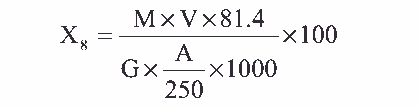

经测定酸不溶物的滤液中，加入氟化铵、消除铁、铝离子干扰，于 pH5.5 下，以二甲酚 磴为指示剂，用 EDTA 标准溶液滴定试样中锌离子。
1. 氟化铵。
2. 2mol/L 氢氧化钠溶液。
3. 0.01mol/L 乙二胺四乙酸二钠标准溶液配制及标定同 4.2.9 项。
4. 0.5%二甲酚橙溶液。
5. pH5.5 乙酸—乙酸钠缓冲溶液配制——称取 200g 醋酸钠（ NaAC·3H2O）溶
于 150mL 水中，加 9mL 冰醋酸，用水稀释至 1000mL。
滴定管： 25mL。
1. 吸取测定酸不溶物手滤液 10～50mL，移入 250mL 锥形瓶中，加入 2g 氟化
铵，用水稀释至约 75mL，用 2mol/L 氢氧化钠溶液调节 pH 约 5～6，摇匀后加入 10mL pH=5.5
乙酸—乙酸钠缓冲溶液，温热至 30～40℃。
2. 加入二甲酚橙指示剂 2～3 滴，用 0.01mol/L EDTA 标准溶液滴定至溶液由紫
红色突变为黄色为终点。
氧化锌含量 X8（ %）， 按下式计算：

式中： M——EDTA 标准溶液的浓度，摩尔/升；
V——滴定消耗 EDTA 标准溶液的体积，毫升；
G——试样的重量，克；
A——吸取测定酸不溶物后滤液的体积，毫升；
81． 4——氧化锌的摩尔质量，克/摩尔。
平行测定两结果差不大于较小结果 0.4%。
取平行测定两结果的算术平均值，作为垢样的氧化锌的含量。